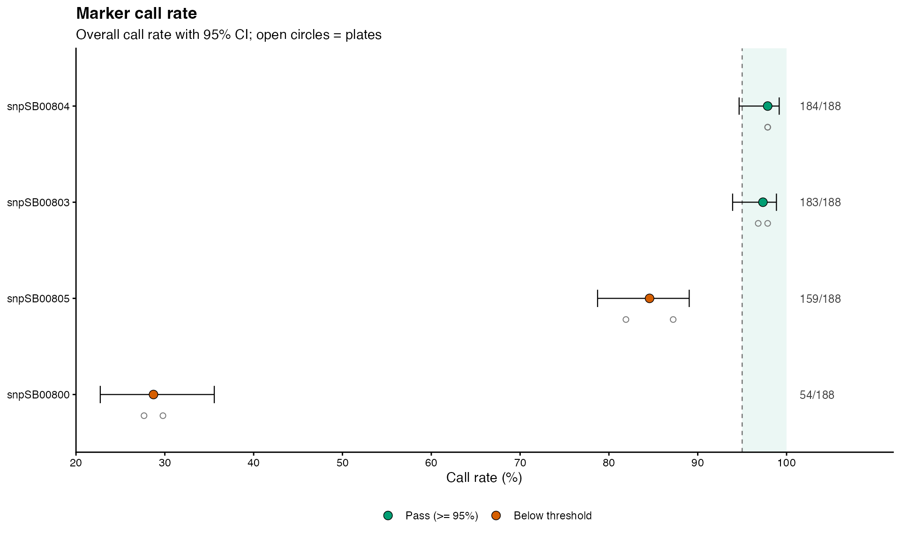
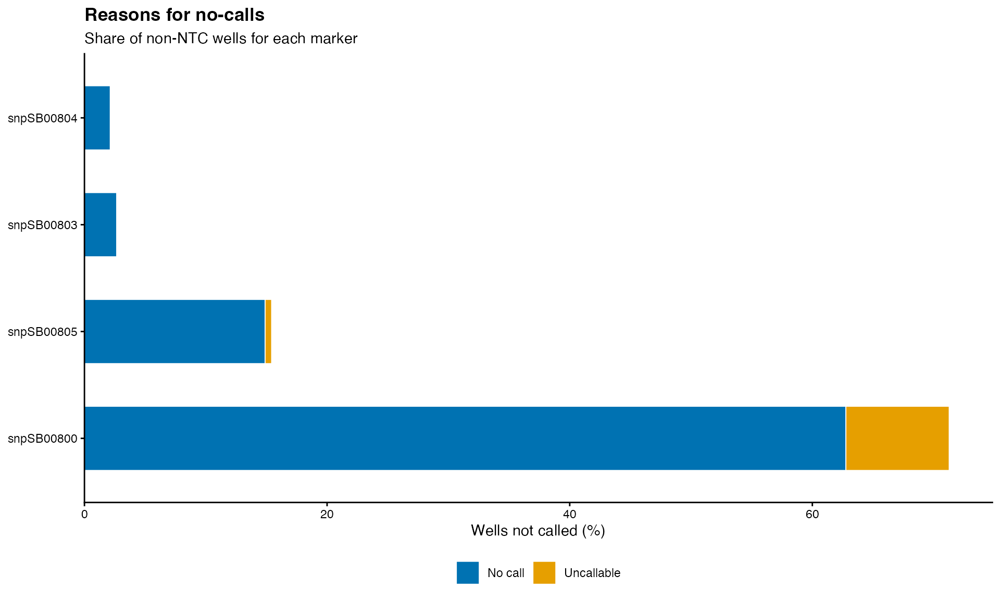
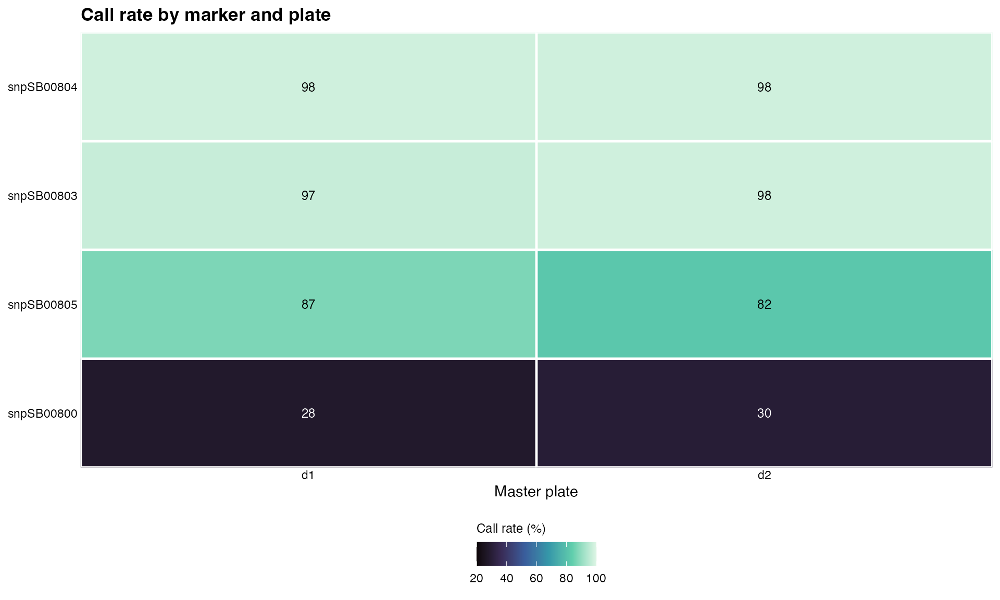

Summarizes how many wells were successfully genotyped (called) for each KASP marker, overall and on each master plate, and explains why the remaining wells were not called. No Template Controls (NTC) are excluded from the denominator. Overall call rates are reported with a Wilson score confidence interval.
A well is classified as:
Called: the genotype call contains
sep(e.g.A:G).No call: the genotype call matches
no_call(e.g.?) or is missing.Uncallable: the genotype call matches
uncallable.Other: any other non-NTC value (e.g.
Bad,Missing,DUPE).
Usage
kasp_call_rate(
x,
snp_id = "SNPID",
plate_id = "MasterPlate",
geno_call = "Call",
sep = ":",
blank = "NTC",
no_call = "?",
uncallable = "Uncallable",
threshold = 0.95,
conf_level = 0.95
)Arguments
- x
A data frame of KASP genotype calls for one or multiple plates, such as the
Datacomponent returned byread_kasp_csv().- snp_id
A character value indicating the column name for SNP IDs in
x.- plate_id
A character value indicating the column name for master plate IDs in
x. Set toNULLifxhas no plate column; the per-plate summary and plot are then omitted.- geno_call
A character value indicating the column name for KASP genotype calls in
x.- sep
A character value for the separator between alleles in a genotype call.
- blank
A character vector of genotype calls for No Template Controls (NTC).
- no_call
A character vector of genotype calls for wells that could not be called (KASP uses
?).- uncallable
A character vector of genotype calls for uncallable wells.
- threshold
A numeric value between 0 and 1. Markers and plates with a call rate at or above this value pass.
- conf_level
Confidence level for the Wilson confidence interval of the overall marker call rate.
Value
A list with the following components:
- marker_summary
A data frame with one row per marker: well counts by category,
call_rate,ci_lower,ci_upperandpass. Rows are ordered from the lowest to the highest call rate.- plate_summary
A data frame with one row per marker and master plate with the same counts,
call_rateandpass.NULLifplate_id = NULL.- marker_call_rate
A ggplot of the overall call rate of each marker with its confidence interval, the call rate of each plate (open circles) and the pass threshold.
- no_call_reason
A ggplot of the share of wells not called for each marker, split by reason.
- plate_call_rate
A ggplot heatmap of call rates by marker and master plate.
NULLifplate_id = NULL.
Examples
# \donttest{
library(panGenomeBreedr)
path1 <- system.file("extdata", "Genotyping_141.010_01.csv",
package = "panGenomeBreedr", mustWork = TRUE)
file1 <- read_kasp_csv(file = path1, data_type = 'raw')
cr <- kasp_call_rate(x = file1$Data,
snp_id = 'SNPID',
plate_id = 'MasterPlate',
geno_call = 'Call',
threshold = 0.95)
cr$marker_summary
#> SNPID called no_call uncallable other n_wells call_rate ci_lower
#> 1 snpSB00800 54 118 16 0 188 0.2872340 0.2273251
#> 2 snpSB00805 159 28 1 0 188 0.8457447 0.7872434
#> 3 snpSB00803 183 5 0 0 188 0.9734043 0.9392619
#> 4 snpSB00804 184 4 0 0 188 0.9787234 0.9465792
#> ci_upper pass
#> 1 0.3556638 FALSE
#> 2 0.8903995 FALSE
#> 3 0.9885876 TRUE
#> 4 0.9916956 TRUE
cr$marker_call_rate

cr$no_call_reason

cr$plate_call_rate

# }